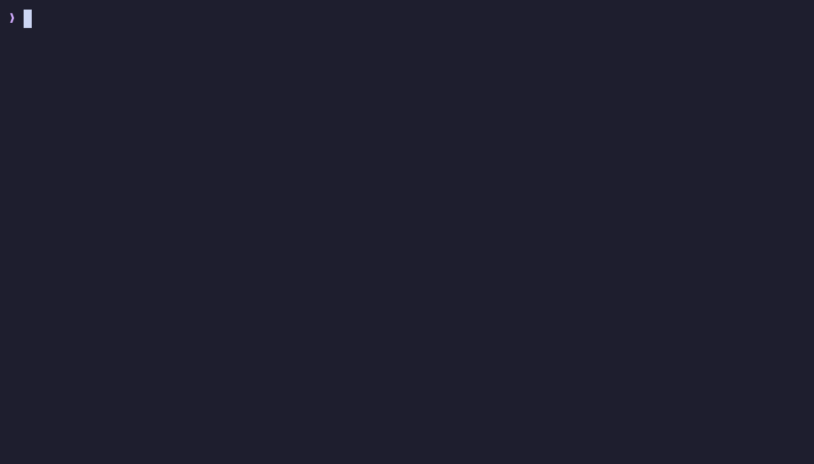

v@VERSION:ross-transcribe@ · Linux · terminalterminal
transcribe
Turn audio and video into text from the terminal, on your own computer. Pick files from a list, get the transcript on screen, as a .txt with timestamps or as subtitles. Nothing is uploaded and there's no account: faster-whisper runs locally.
Convierte audio y video en texto desde la terminal, en tu propia compu. Eliges los archivos de una lista y obtienes la transcripción en pantalla, en un .txt con tiempos o como subtítulos. No se sube nada y no hay cuenta: faster-whisper corre en tu máquina.

Install
Instalar
From the signed repository. The package brings its own Python, so your distribution's version doesn't matter, and ffmpeg comes as a dependency.
Desde el repositorio firmado. El paquete trae su propio Python, así que la versión de tu distribución no importa, y ffmpeg llega como dependencia.
If you haven't added the repository yet, do that first (one time). Then:
Si todavía no agregaste el repositorio, hazlo primero (una sola vez). Luego:
sudo pacman -Syu ross-transcribe-binIf you haven't added the repository yet, do that first (one time). Then:
Si todavía no agregaste el repositorio, hazlo primero (una sola vez). Luego:
sudo apt update && sudo apt install ross-transcribeIf you haven't added the repository yet, do that first (one time). Then:
Si todavía no agregaste el repositorio, hazlo primero (una sola vez). Luego:
sudo dnf install ross-transcribeOn macOS or without the repository: uv tool install git+https://github.com/rossmelabasto/ross_transcribe (needs Python 3.10+ and ffmpeg).
En macOS o sin el repositorio: uv tool install git+https://github.com/rossmelabasto/ross_transcribe (necesita Python 3.10+ y ffmpeg).
Use
Uso
transcribe # pick files from Downloads, search the machine or type a path
transcribe meeting.m4a # transcript on screen
transcribe class.mp4 -t -o # a .txt with timestamps next to the file
transcribe video.mkv --srt -o # subtitles
transcribe note.ogg -l es # tell it the language instead of detecting it
transcribir # the same, with the interface and audio in SpanishThe first time, it downloads the Whisper model from Hugging Face (about 460 MB for the default small). After that it works offline. -m tiny is faster and lighter; -m large-v3-turbo is more accurate and needs more memory.
La primera vez descarga el modelo de Whisper desde Hugging Face (unos 460 MB el small, que viene por defecto). Después funciona sin internet. -m tiny es más rápido y liviano; -m large-v3-turbo es más preciso y necesita más memoria.
record
Comes in the same package. It records from the microphone with a live level meter and, when you stop, offers to transcribe what you said.
Viene en el mismo paquete. Graba del micrófono con un medidor de nivel en vivo y, cuando paras, te ofrece transcribir lo que dijiste.
record # record until Ctrl+C, then: transcribe, save a .txt or nothing
record -s -t idea # start when you speak, stop after 3 s of silence, transcribe
record class -c -o # clean up the audio and save the transcript next to it
record -l # list microphones; -i <name> picks oneRecordings go to ~/Recordings. It uses SoX and PipeWire (or PulseAudio).
Las grabaciones van a ~/Recordings. Usa SoX y PipeWire (o PulseAudio). Sus mensajes están en inglés.
Requirements
Requisitos
| System | Sistema | Linux x86_64 with glibc 2.35 or newerLinux x86_64 con glibc 2.35 o más nueva |
| Speed | Velocidad | On a recent CPU, a minute of audio takes a few seconds with the default modelEn un CPU reciente, un minuto de audio tarda unos segundos con el modelo por defecto |
| GPU | Optional: an NVIDIA GPU is used when the CUDA 12 libraries are installed; otherwise it runs on the CPUOpcional: usa una GPU NVIDIA si están instaladas las librerías de CUDA 12; si no, corre en el CPU |